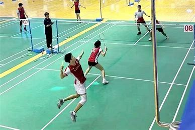

欣赏林丹的精彩比赛！这是2008年的北京奥运会。
2008北京奥运会羽毛球男单决赛林丹vs李宗伟蓝光版_腾讯视频 (qq.com)

羽毛球（Badminton）是一项隔着球网，使用长柄网状球拍击打用羽毛和软木制作而成的一种小型球类的室内运动项目。羽毛球比赛在长方形的场地上进行，场地中间有网相隔，双方运用各种发球、击球和移动等技战术，将球在网上往返对击，以不使球落在本方有效区域内，或使对方击球失误为胜。
作为目前中国第一大体育运动，羽毛球有着相当低的上手难度和相当广的普遍度。
羽毛球在互联网上热度飙升，受到跨越各个年龄段的运动爱好者的追捧，甚至被打上“年轻人健身尽头的运动”“体制内第一运动”等标签，伴随近期羽毛球价格的大幅波动，羽毛球运动相关话题频上热搜。拥有广泛群众基础的羽毛球运动如果能实现“长红”到“爆红”，再到高热度的高水平“长红”，并通过需求端带动整个羽毛球产业的发展，则可能成为文体产业高质量发展的一个标杆运动。